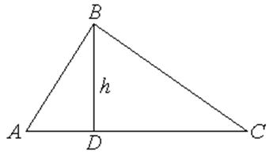

П 5.1 № 6.
Найдите расстояние от точки  с
координатами до прямой, проходящей через точки и .
с
координатами до прямой, проходящей через точки и .
с
координатами до прямой, проходящей через точки и .Решение:

Построим треугольник и
опустим высоту из вершины на основание (или
его продолжение).
на основание (или
его продолжение). Тогда искомое расстояние равно ,
и задача свелась к предыдущей.
Ответ:5.